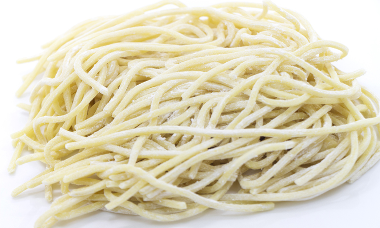
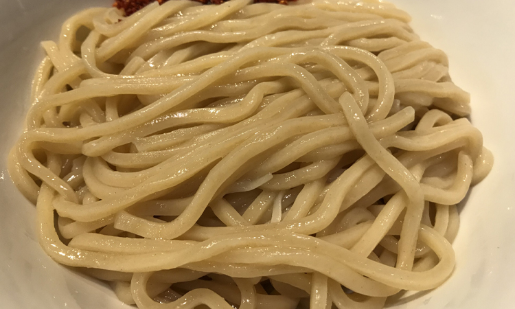
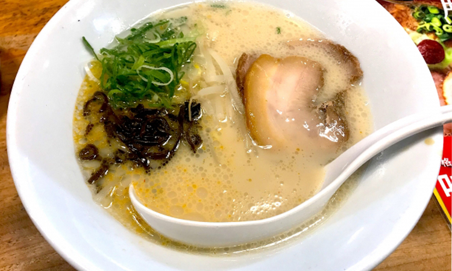

太麺にかける想い

博多豚骨には細麺が主流ですが、当店ではあえて極太麺を使用しています。
多数のらーめんやがひしめく中、誰もやらないような発想が必要だと店主ほそのめは考えました。
自分の名字が「細目(ほそのめ)」だったこともあり、名前とのギャップやギャグ要素を含んだらーめんで話題になること間違い無しと確信し、ラーメン業界に華々しく参入いたしました。
ほそのめの麺作り

使用している麺は、市販されている大○軒のつけ麺専用のものを使っています。
在庫の心配がなく品切れになっても、要望があれば近くから仕入れることができるので来ていただいた方には絶対に召し上がっていただけるようにしています。
ほそのめのスープ

スープも業務用の博多豚骨のスープを使用しています。
スープ作りにかかるコストなどをなるべく削減して、いかにご来店していただいた方に提供できるかを考えた結果この選択に至りました。